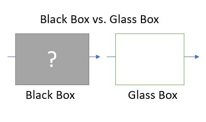

Explainable AI, or XAI
Published on Nov 30, 2022
Explainable Artificial Intelligent, or XAI widely used fundamental concepts and understanding the differences between inherently explainable Artificial Intelligent or opaque Artificial intelligent are crucial for AI development.
I will try to cover the concept of black box as it applies to explainable AI and deep learning and the goal of converting the black box into a transparent or glass box. I will touch on what interpretability problems are and what Google’s principles of interpretability are.
What is explainable AI or XAI?
Deep learning system provides us more insights about the explainable AI and gives us a set of techniques and methods to extract the information needed to explain how systems work and which systems can be readily understood by human expatriates.
Explainable AI works across various industries and we have even used them every day in our lives with all the possible what AI does and working inner parts of the deep learning systems are tremendously difficult for humans to understand, therefore the system can be explained as black box, and explainable AI solves the problem by making the black box into a transparent box.
One of the best ways to understand AI applications is to use algorithms which are inherently explainable and easy for humans to understand, and other algorithms that should be avoidable to use are inherently Opaque which is hard or impossible for humans to understand. We assume all algorithms should be as simple for humans to understand but it turns out that some of the best-known solutions are in opaque algorithms and which are not easily explainable.
Types of AI algorithms
There are two types of AI algorithms Inherently Explainable and Inherently Opaque. Inherently explainable algorithms are Decision trees, Regressions algorithms, Bayesian classifiers, and support vector machines. Humans can easily understand the interior of these algorithms. With a curious mind one can easily be understood by looking through the descriptions and the data structures and what is contained in the code implementations. However, on the other hand inherently opaque algorithms are much more complex model structure and interior system.
When explaining about the decision tree which involves many different variables branches and each branch there are each node in the tree and there is simple decision based on the comparison between two or more variables by understanding this will understand the whole tree structure but when explaining about deep learning neural networks the complexity grows exponentially.
Inherently opaque consists of Deep learning algorithms and genetic algorithms. Genetic algorithms are based on deterministic processes and very random works on principles of code recombination and mutation, therefore it's even more opaque.
Black box concepts
The deep learning models are called black boxes because humans have very difficulty understanding how decisions are made internally. That's why the point of explainable AI is to make their internal decisions transparent. Transforming the black box into the glass box will expose the clear visible inside the machinery system and working models.
For more information, I can be reached at kumar.dahal@outlook.com or https://www.linkedin.com/in/kumar-dahal/ https://visucraft.com/talktokumar/default.html